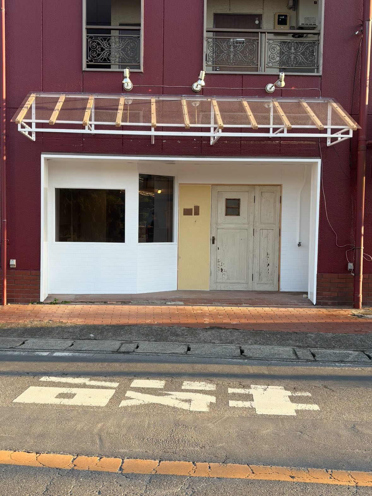
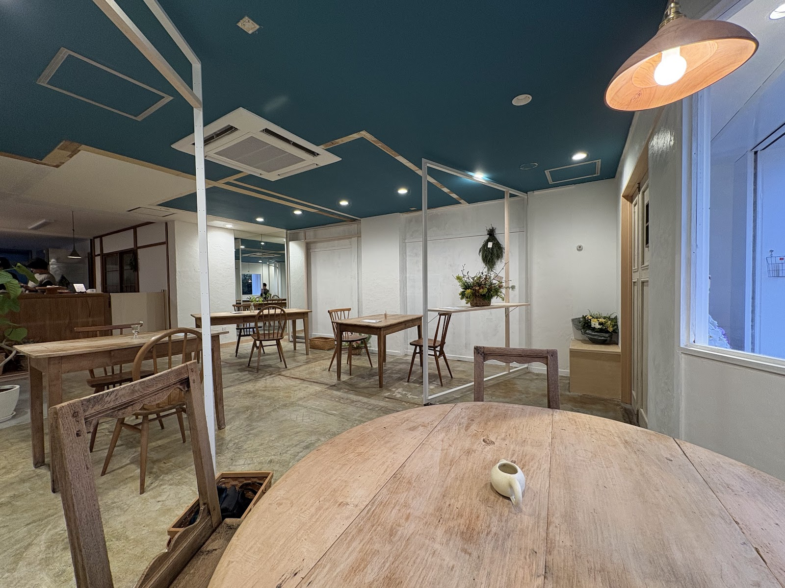
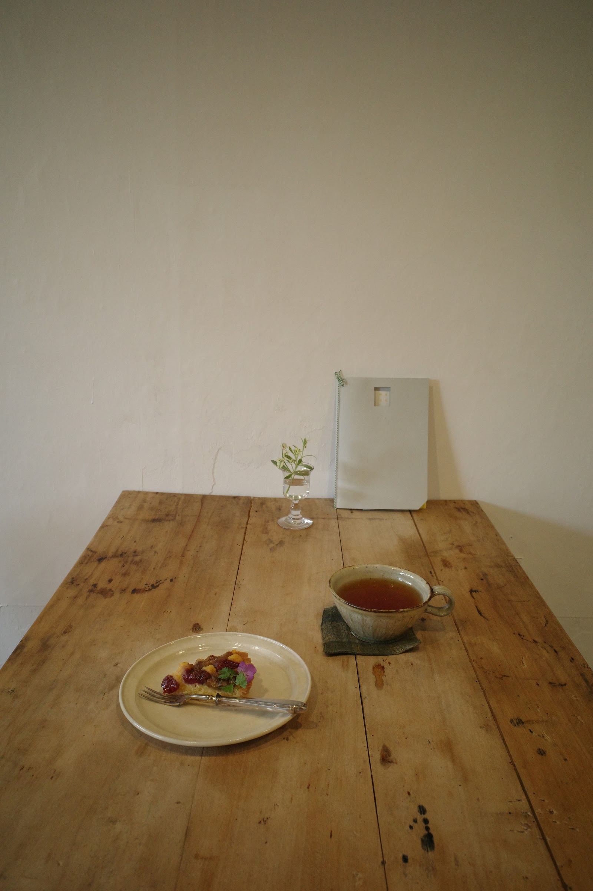

撮影: cafe mado
窓 - mado -
千葉県我孫子市根戸の住宅街に、静かにたたずむ一軒のカフェ。その名は「mado」——店の顔とも言える、通りに面した印象的な窓に由来しています。木々の緑や行き交う人の気配をやわらかく切り取るこの窓は、店内に光を届けるだけでなく、道を歩く人の視線をふと引き寄せる存在でもありました。cafe madoという名前には、その窓を大切な入り口として、日常のなかにひとつの景色を差し出したいという思いが込められています。

撮影: cafe mado
鏡と灯りが生む、静かな奥行き
店内に配された鏡は、限られた空間に奥行きと広がりをもたらします。ペンダントライトの灯りが鏡面にやわらかく映り込み、昼と夜とで異なる表情を見せる店内。窓から届く自然光と、灯りが鏡に反射してつくる陰影が重なり合うことで、ただ座っているだけで気持ちが落ち着くような、静かな時間が生まれます。装飾を饒舌に語るのではなく、光と影の重なりそのものが、この場所の雰囲気を静かに物語っています。

撮影: めーさん
北柏の街から、少し離れた時間へ
JR常磐線・北柏駅北口から徒歩7分。駅前の賑わいから少し歩くと、根戸の住宅街にcafe madoはあります。決して便利さだけを求める立地ではありませんが、その道のりこそが日常から気持ちを切り替える時間になるかもしれません。窓と鏡に見守られた店内で過ごすひとときは、慌ただしい一日の中に、ふと立ち止まるような静けさをもたらしてくれます。北柏の街から少し離れたこの場所で、ゆったりとした時間をお過ごしください。
この空間で、ゆったりとした時間をお過ごしください。